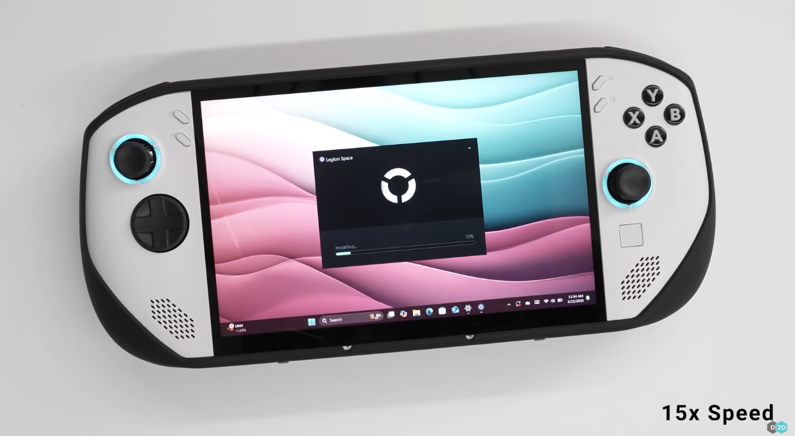

Consoles handhelds lançados recentemente
Nintendo Switch 2
A empresa japonesa lançou a segunda edição do popular Nintendo Switch. A opção de jogar de modo portátil ou como um console tradicional na televisão foi muito popular entre os gamers, e com sua segunda iteração não foi diferente. Apesar do aumento do preço, o produto rapidamente vendeu mais de 3,5 milhões de unidades, esvaziando o estoque em vários países, inclusive o Brasil
Especificações
Lenovo Legion Go S
Mais uma versão do portátil da Lenovo, o Legion Go S,
agora com o chip AMD Ryzen Z2 Go, ficou muito popular no
mercado. O console tem duas versões: uma com Windows 11,
e outra com o SteamOS (Valve). É o primeiro sem ser o
Steam Deck (Valve) que vem o sistema operacional baseado
em Linux. Sua performance é evidentemente limitada se
comparada à um computador completo, mas ainda assim,
entrega uma ótima performance, principalmente para jogos
com menos intensidade gráfica.

Legion S Go versão Windows - cor branca
SteamOS ou Windows?
Para muitos, a opção Windows parece ser a mais óbvia: suporte à praticamente todos os jogos de
qualquer plataforma, suporte à tecnologias
anticheat no nível do kernel,
e em geral, o sistema operacional mais usado no mundo, então deve ser mais familiar para
a maioria das pessoas.
No entanto, o modelo Windows tem tido performance
pior que o SteamOS.
Por ser um sistema mais leve, com menos processos rodando por trás e otimizado
especificamente para jogos, ele consistentemente superou o Windows. Além disso,
a interface gráfica do Steam Deck é um grande benefício. O sistema liga automaticamente
no modo big picure, que é feito para ser mais fácil de se navegar
com os botões de um controle de videogame.
Crédito: Dave2D - YouTube

Crédito: Dave2D - YouTube